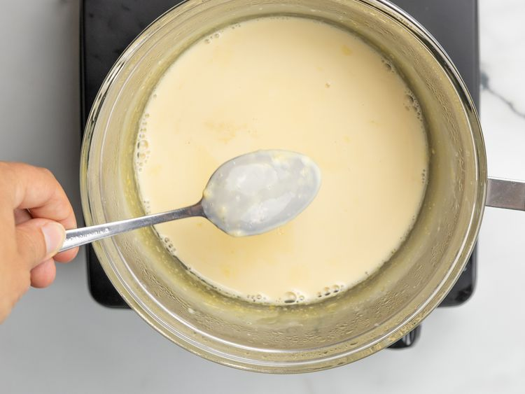
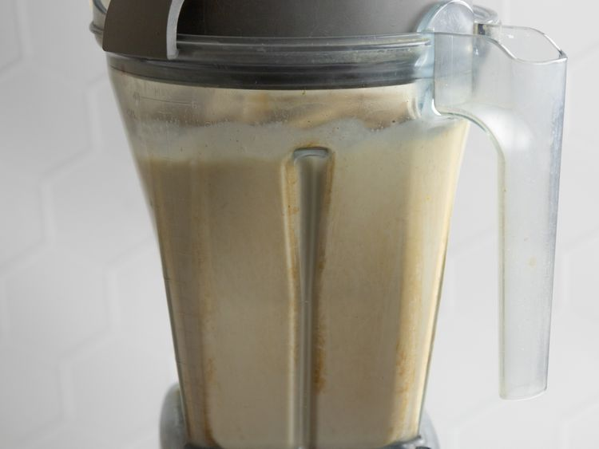

Step 1
Combine evaporated milk and egg yolks in the top of a double boiler over
simmering water. Cook over medium heat, stirring constantly, until mixture
coats the back of a spoon and reaches a temperature of 160 degrees F (71
degrees C).

simmering water. Cook over medium heat, stirring constantly, until mixture
coats the back of a spoon and reaches a temperature of 160 degrees F (71
degrees C).
Step 2
Transfer mixture to a blender. Add cream of coconut, sweetened condensed
milk, rum, water, vanilla, cinnamon, and cloves; blend until well combined, about
30 seconds.

milk, rum, water, vanilla, cinnamon, and cloves; blend until well combined, about
30 seconds.
Step 3
Pour into a sterilized glass bottle and refrigerate. Serve over ice, if desired.